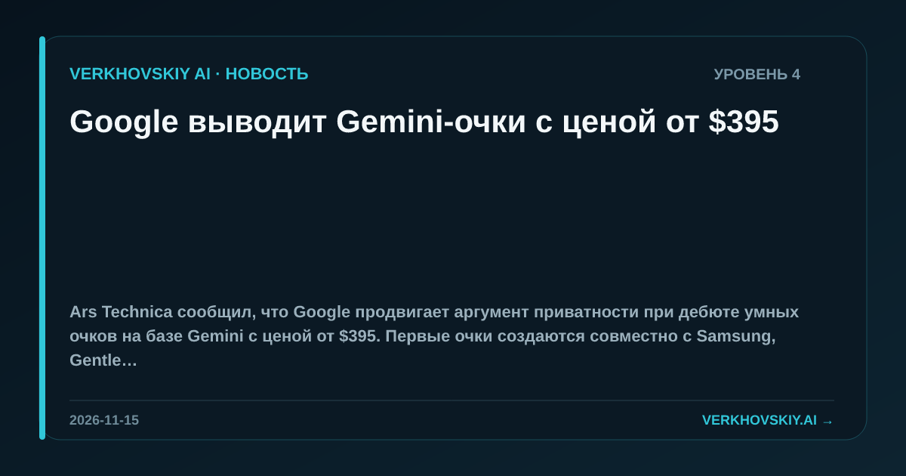

Google выводит Gemini-очки с ценой от $395
Ars Technica сообщил, что Google продвигает аргумент приватности при дебюте умных очков на базе Gemini с ценой от $395. Первые очки создаются совместно с Samsung, Gentle Monster и Warby Parker.

Ars Technica сообщил, что Google продвигает аргумент приватности при дебюте умных очков на базе Gemini с ценой от $395. Первые очки создаются совместно с Samsung, Gentle Monster и Warby Parker.